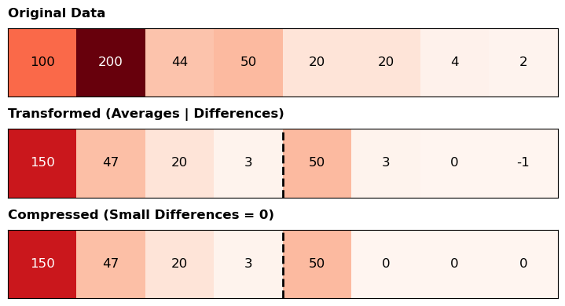
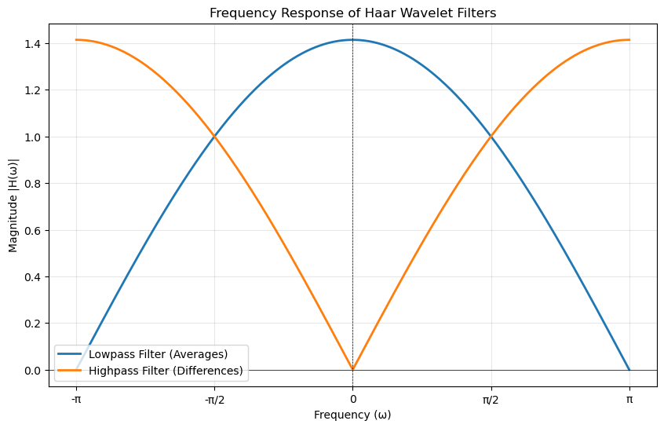
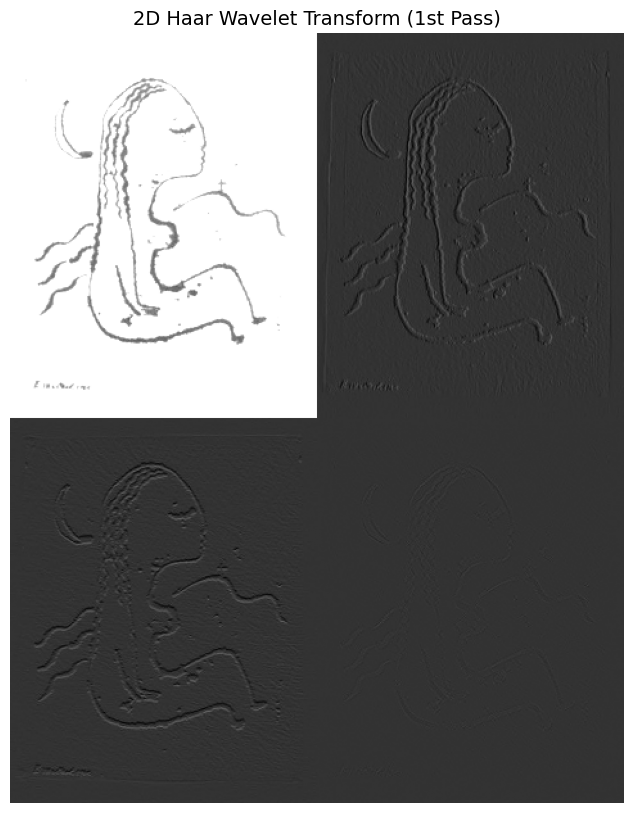
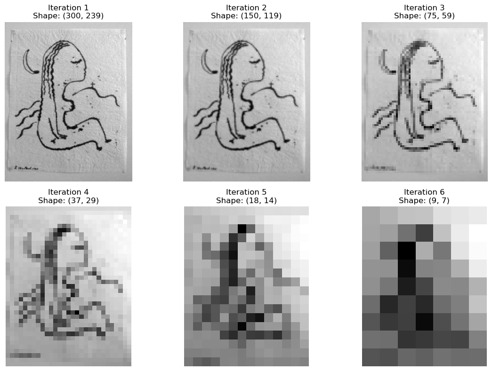

Linear Algebra - Discrete Haar Wavelet Transform (HWT)
Introduction to the Discrete Haar Wavelet Transform (HWT)
The Discrete Haar Wavelet Transformation (HWT) is the simplest discrete wavelet transform. It compresses data by replacing pairs of adjacent values with their average and their difference.
Reconstruction & Lossy Compression With both the averages and the differences, the original data can be perfectly reconstructed by reversing the operation:
\[ a = \text{Average} - \text{Difference}, \quad b = \text{Average} + \text{Difference} \]
Transforming the data into \((A \mid D)\) highlights trends and is highly efficient for lossy compression. Large differences indicate significant jumps, while small differences imply little change. By zeroing out small differences to save transmission bandwidth, we can still achieve a close approximation of the original data.
For instance, transmitting \((150, 47, 20, 3 \mid 50, 0, 0, 0)\) reconstructs to \((100, 200, 47, 47, 20, 20, 3, 3)\)—a highly accurate compressed version of the original list.
Matrix Formulation For an even-length vector, this transformation can be expressed as a block matrix multiplication. For an 8-element vector, grouping the averages in the first half of the output and the differences in the second half yields the following transformation matrix \(W\) acting on vector \(X\):
We can observe the impact of the change in magnitudes of the transmitted numbers below, with white reflecting small numbers and red reflecting big numbers.
import numpy as npimport matplotlib.pyplot as pltfrom manim import*# 1. Define our lists as 1D numpy arrays (1 row, 8 columns)original = np.array([[100, 200, 44, 50, 20, 20, 4, 2]])transformed = np.array([[150, 47, 20, 3, 50, 3, 0, -1]])# Compressing the last three small differences to exactly 0compressed = np.array([[150, 47, 20, 3, 50, 0, 0, 0]]) # 2. Set up the plotfig, axes = plt.subplots(3, 1, figsize=(10, 4))titles = ["Original Data", "Transformed (Averages | Differences)", "Compressed (Small Differences = 0)"]arrays = [original, transformed, compressed]# 3. Loop through and plot each arrayfor i, ax inenumerate(axes):# Plot using a colormap where numbers closer to 0 are light, and higher numbers are dark# 'Reds' works well to show "heat" or "weight" of the data cax = ax.matshow(arrays[i], cmap='Reds', vmin=0, vmax=200)# Add the actual numbers as text inside the boxesfor (j, k), val in np.ndenumerate(arrays[i]): ax.text(k, j, f'{val}', ha='center', va='center', color='white'if val >100else'black', fontsize=12)# Formatting to make it look clean ax.set_title(titles[i], pad=10, loc='left', fontweight='bold') ax.set_xticks([]) ax.set_yticks([])# Add a vertical line to separate Averages from Differences on the transformed arraysif i >0: ax.axvline(x=3.5, color='black', linewidth=2, linestyle='--')plt.tight_layout()plt.show()
c:\ProgramData\anaconda3\envs\fin-env\lib\site-packages\pydub\utils.py:170: RuntimeWarning: Couldn't find ffmpeg or avconv - defaulting to ffmpeg, but may not work
warn("Couldn't find ffmpeg or avconv - defaulting to ffmpeg, but may not work", RuntimeWarning)

The Geometric Intuition of the Haar Transform
To really understand what this code is doing, we need to step away from the raw numbers and ask ourselves: what is this matrix actually doing to space?
In linear algebra, every matrix represents a transformation of space, and we can understand that transformation simply by watching where the standard basis vectors—our friendly unit vectors \(\hat{\imath}\) and \(\hat{\jmath}\)—land.
The Standard Perspective: Raw Data
Normally, when we plot a vector like \(v = [5, 2]\), we are reading it in the “standard basis.”
The x-axis (\(\hat{\imath}\)) represents the first data point (e.g., Pixel 1 has an intensity of 5).
The y-axis (\(\hat{\jmath}\)) represents the second data point (e.g., Pixel 2 has an intensity of 2).
In this coordinate system, we are looking at the raw, independent values of our data.
The Change of Perspective: Averages and Differences
The matrix \(W_2\) in your code isn’t just crunching numbers; it is fundamentally changing our perspective. It applies a change of basis.
Let’s look at the columns of your matrix \(W_2\) to see where our grid lands:
If you watch this animation unfold in Manim, you won’t see a complex distortion or shearing of space. You will see a rigid rotation. Specifically, the entire coordinate plane rotates 45 degrees clockwise.
By rotating the grid, we are redefining what the axes mean:
The New X-Axis (The Sum/Average): The new horizontal axis now points along the diagonal where \(x = y\). It no longer measures “Pixel 1”; it measures the combined magnitude (the sum or average) of both pixels. In signal processing, this is your “low-pass filter”—the general trend of the data.
The New Y-Axis (The Difference): The new vertical axis points perpendicular to the trend. It measures how much the two pixels deviate from each other. If \(v = [5, 5]\), it would lie perfectly on the new x-axis, meaning there is zero difference. Because \(v = [5, 2]\), the vector pulls away from that axis, capturing the fluctuation (the “high-pass filter”).
Why the \(1/\sqrt{2}\) Factor?
You might wonder why we need the \(1/\sqrt{2}\) scaling factor rather than just using 1s and -1s.
If we transformed the space using just [1, 1] and [-1, 1], our new basis vectors would have a length of \(\sqrt{2}\). The grid squares would stretch, and the total area (or “magnitude”) of our vectors would artificially increase.
By dividing by \(\sqrt{2}\), we normalize the transformation. Geometrically, this ensures that the transformation is purely a rotation without any scaling. In the context of data science and physics, this is crucial: it means the transform is orthogonal. It preserves the total distance from the origin. The total “energy” of your data remains exactly the same; it has simply been repackaged from “raw values” into “trends and fluctuations.”
%%manim -qm -v WARNING HaarTransformVisualizationimport numpy as npclass HaarTransformVisualization(LinearTransformationScene):def__init__(self, **kwargs): LinearTransformationScene.__init__(self, show_coordinates=True, leave_ghost_vectors=False, show_basis_vectors=True,**kwargs # Pass them up here too )def construct(self):# The Normalized Haar Matrix W2 s2 = np.sqrt(2) W2 = np.array([ [1/s2, 1/s2], # Row 1: Average (Low-pass) [-1/s2, 1/s2] # Row 2: Difference (High-pass) ])# A vector representing a 2-pixel 'image' v = np.array([5, 2]) vector =self.add_vector(v, color=YELLOW) label = MathTex("v = [5, 2]").next_to(vector.get_end(), LEFT)self.add(label)self.wait()# Apply the matrix transformationself.apply_matrix(W2)self.wait(2)
Filtering the Signal from the Noise: A Frequency Perspective
When analyzing a noisy time series—whether you are tracking physical momentum or trying to extract the underlying trend from high-frequency market microstructure—you need a reliable way to separate the core signal from the rapid fluctuations. The Haar Transform achieves this using two distinct “lenses.”
The first half of the transform acts as a Lowpass Filter, using the coefficients \([\frac{1}{\sqrt{2}}, \frac{1}{\sqrt{2}}]\). This filter computes a weighted average. It allows the slow, steady trends (the “low frequencies”) to pass through undisturbed, while smoothing out rapid jumps. If two adjacent values are nearly identical, the lowpass filter preserves them; if they are opposites, it zeroes them out.
The second half acts as a Highpass Filter, using the coefficients \([\frac{1}{\sqrt{2}}, -\frac{1}{\sqrt{2}}]\). This filter computes the weighted difference. It behaves exactly opposite to the lowpass filter: steady, unchanging data is zeroed out, while sudden spikes, shocks, or rapid oscillations (the “high frequencies”) are captured and highlighted.
Visualizing with Fourier Series
To truly understand the behavior of these filters, engineers step out of the time domain and into the frequency domain using Fourier series. By taking the filter coefficients and mapping them to a complex exponential series, \(H(\omega) = c_0 + c_1 e^{i\omega}\), we can plot their absolute magnitudes across different frequencies (\(\omega\)).
At \(\omega = 0\) (a completely flat, constant signal), the Lowpass filter outputs its maximum value (\(\sqrt{2}\)), while the Highpass filter outputs \(0\).
At \(\omega = \pi\) (a rapidly alternating signal, like \([1, -1, 1, -1]\)), the Highpass filter maximizes at \(\sqrt{2}\), and the Lowpass filter flatlines at \(0\).
Here is the Python code using numpy and matplotlib to calculate and plot the Fourier series magnitudes of these two Haar filters.
import numpy as npimport matplotlib.pyplot as plt# Define the frequency range (omega) from -pi to piomega = np.linspace(-np.pi, np.pi, 500)# The 1/sqrt(2) scaling factors2 =1/ np.sqrt(2)# Calculate the Fourier series for the filters# Lowpass: H_low(w) = s2 + s2 * e^(iw)H_low = s2 + s2 * np.exp(1j* omega)# Highpass: H_high(w) = s2 - s2 * e^(iw)H_high = s2 - s2 * np.exp(1j* omega)# Calculate the absolute magnitudesmag_low = np.abs(H_low)mag_high = np.abs(H_high)# Plotting the frequency responseplt.figure(figsize=(10, 6))plt.plot(omega, mag_low, label='Lowpass Filter (Averages)', linewidth=2)plt.plot(omega, mag_high, label='Highpass Filter (Differences)', linewidth=2)# Formatting the plotplt.title('Frequency Response of Haar Wavelet Filters')plt.xlabel('Frequency (ω)')plt.ylabel('Magnitude |H(ω)|')# Set x-axis ticks to multiples of piplt.xticks([-np.pi, -np.pi/2, 0, np.pi/2, np.pi], ['-π', '-π/2', '0', 'π/2', 'π'])plt.axvline(0, color='black', linewidth=0.5, linestyle='--')plt.axhline(0, color='black', linewidth=0.5)plt.legend()plt.grid(True, alpha=0.3)plt.show()

The 2D Haar Transform: A Two-Step Change of Perspective
To understand how this works in two dimensions, imagine the raw sensor data captured by a digital camera. Instead of a single line of data, you are working with a massive grid—a matrix \(A\) where every cell represents a pixel’s grayscale intensity.
To apply the Haar Wavelet Transform to this image, we cannot just process the whole matrix at once. We have to apply our “change of perspective” in two distinct phases: first vertically, then horizontally.
Step 1: The Vertical Pass (Processing Columns)
First, we multiply our image matrix \(A\) by the Haar matrix \(W_M\) to get \(W_M A\).
Geometrically, this applies the 1D lowpass and highpass filters to every single column of the image.
The top half of the resulting matrix contains the vertical averages. It looks like the original image has been vertically squished and blurred.
The bottom half contains the vertical differences. This highlights the horizontal edges in the image (where the brightness suddenly jumps from top to bottom).
Step 2: The Horizontal Pass (Processing Rows)
Processing the columns isn’t enough; we need to filter the rows as well. We take our new, half-squished matrix \(W_M A\) and multiply it on the right by the transposed Haar matrix \(W_N^T\), giving us the full 2D transformation:
\[ 2\text{D HWT} = W_M A W_N^T \]
By multiplying on the right by the transpose, we apply the exact same averaging and differencing logic to the rows of the matrix.
The Result: The Four Quadrants
This two-step process neatly divides the image matrix into four distinct sub-bands (quadrants), each telling us something different about the data:
Top-Left (Average of Averages): The lowpass filter applied in both directions. This produces a smooth, scaled-down “thumbnail” of the original image containing most of the visual energy.
Top-Right (Average of Differences): Lowpass vertically, highpass horizontally. This quadrant highlights vertical edges in the original image.
Bottom-Left (Difference of Averages): Highpass vertically, lowpass horizontally. This quadrant highlights horizontal edges.
Bottom-Right (Difference of Differences): Highpass in both directions. This quadrant isolates diagonal edges and high-frequency noise.
Because the detail quadrants (the top-right, bottom-left, and bottom-right) usually contain very small numbers or zeros—especially in areas of flat color—they are prime targets for lossy compression.
To see why the Haar Wavelet Transform is so efficient for image compression, we can look at how it acts locally. Every element in the transformed matrix is calculated from just a small \(2 \times 2\) block of pixels in the original image.
Let’s define a \(2 \times 2\) pixel block from our image as:
\[ \begin{bmatrix} a & b \\ c & d \end{bmatrix} \]
By splitting the wavelet matrix into a lowpass block \(H\) (averages) and a highpass block \(G\) (differences), the 2D transform \(WAW^T\) divides the data into four quadrants. Here are the specific mappings (simplifying the image’s \(2 \cdot (x)/4\) notation to just \(x/2\)):
1. Top-Left: The Approximation (\(HAH^T\))
\[ \frac{a + b + c + d}{2} \]
What it does: Averages both columns and rows.
Meaning: This is a localized blur. It captures the general brightness of the \(2 \times 2\) block and contributes to the scaled-down “thumbnail” of the overall image.
2. Top-Right: Vertical Details (\(HAG^T\))
\[ \frac{(b + d) - (a + c)}{2} \]
What it does: Averages the columns, but takes the difference of the rows.
Meaning: It compares the right side of the block \((b+d)\) to the left side \((a+c)\). Large numbers here mean you have hit a vertical edge; numbers near zero mean the color is flat moving left-to-right.
3. Bottom-Left: Horizontal Details (\(GAH^T\))
\[ \frac{(c + d) - (a + b)}{2} \]
What it does: Takes the difference of the columns, but averages the rows.
Meaning: It compares the bottom of the block \((c+d)\) to the top \((a+b)\). Large numbers here indicate a horizontal edge.
4. Bottom-Right: Diagonal Details (\(GAG^T\))
\[ \frac{(b + c) - (a + d)}{2} \]
What it does: Takes the difference of both the columns and the rows.
Meaning: It measures changes across the \(\pm 45^{\circ}\) lines, comparing the anti-diagonal \((b, c)\) to the main diagonal \((a, d)\). This isolates high-frequency diagonal noise or corners.
The Power of Iteration
Because most photographs are mostly smooth (like a blue sky or a solid wall), the three detail quadrants (top-right, bottom-left, bottom-right) will largely be filled with numbers very close to zero. By quantizing (rounding) these small numbers to exactly zero, we drastically reduce the file size.
To compress the image even further, we can ignore the detail blocks and apply this exact same \(2 \times 2\) process again, but only on the top-left Approximation block. We can keep iterating this loop, packing the core visual energy into tighter and tighter corners of the matrix!
Putting Theory into Practice
Lets see how this would work for a sample image.
We first convert the image to greyscale.
import numpy as npfrom PIL import Imageimport matplotlib.pyplot as plt# 1. Load the original image (usually defaults to RGB mode)original_image = Image.open("kvinna.jpg")# 2. Convert to Grayscale ("L" mode = Luminance)# This mathematically collapses the 3 RGB channels into 1 brightness channelgray_image = original_image.convert("L")# 3. Convert both to NumPy arrays to observe the dimensional change# original_array.shape will be (Height, Width, 3)# gray_array.shape will be (Height, Width)original_array = np.asarray(original_image)gray_array = np.asarray(gray_image)# 4. Set up a side-by-side visual comparison using Matplotlib# figsize=(12, 6) makes the display wide enough for two imagesfig, axes = plt.subplots(1, 2, figsize=(12, 6))# Plot Original RGBaxes[0].imshow(original_array)axes[0].set_title(f"Original RGB\nShape: {original_array.shape}")axes[0].axis('off') # Hides the coordinate axes for a cleaner look# Plot Grayscale# cmap='gray' is required here, otherwise Matplotlib applies a default color map to the 2D arrayaxes[1].imshow(gray_array, cmap='gray')axes[1].set_title(f"Grayscale\nShape: {gray_array.shape}")axes[1].axis('off')# Display the layoutplt.tight_layout()plt.show()# 5. Save the resulting matrix back to your driveImage.fromarray(gray_array).save("new_kvinna.jpg")
Determining the Shape of the Array
import numpy as npfrom PIL import Imageimport matplotlib.pyplot as plt# Assuming you already loaded 'gray_array' from earlier# image = Image.open("kvinna.jpg").convert("L")# gray_array = np.asarray(image)# ==========================================# TASK 3: Ensure Even Dimensions# ==========================================M, N = gray_array.shape# If M (rows) or N (cols) is odd (modulo 2 is not 0), # we slice the array to exclude the very last row/column ([:-1])if M %2!=0: gray_array = gray_array[:-1, :]if N %2!=0: gray_array = gray_array[:, :-1]M_even, N_even = gray_array.shapeprint(f"Original shape: {(M, N)}")print(f"New even shape: {(M_even, N_even)}")# ==========================================# TASK 4: Generate Wavelet Matrices# ==========================================def get_haar_matrix(n):"""Generates an n x n orthonormal Haar Wavelet Matrix""" W = np.zeros((n, n)) s2 = np.sqrt(2)for i inrange(n //2):# Top half: Averages (Low-pass) W[i, 2*i] =1/s2 W[i, 2*i +1] =1/s2# Bottom half: Differences (High-pass) W[i + n//2, 2*i] =-1/s2 W[i + n//2, 2*i +1] =1/s2return W# We need a left matrix for the rows (M) and a right matrix for the columns (N)W_M = get_haar_matrix(M_even)W_N = get_haar_matrix(N_even)# ==========================================# TASK 5: The 2D Wavelet Transformation# ==========================================# In modern Python, the '@' symbol handles matrix multiplication beautifully.# Formula: W_M * A * W_N^Ttransformed_array = W_M @ gray_array @ W_N.T# --- Visualizing the Result ---plt.figure(figsize=(10, 10))# We use vmin and vmax because the 'Difference' quadrants will contain negative numbers# Adjusting the limits helps us see the 'ghostly' edges betterplt.imshow(transformed_array, cmap='gray', vmin=-50, vmax=200)plt.title("2D Haar Wavelet Transform (1st Pass)", fontsize=14)plt.axis('off')plt.show()# --- Saving the Result ---# PIL Image saving expects 8-bit integers (0 to 255). # Since our transformed matrix contains floats and negative differences, # we need to clip the values to the 0-255 range and convert the data type.clipped_array = np.clip(transformed_array, 0, 255).astype(np.uint8)Image.fromarray(clipped_array).save("kvinna_transformed.jpg")
Original shape: (600, 478)
New even shape: (600, 478)

import numpy as npimport matplotlib.pyplot as pltimport mathdef get_haar_matrix(n):"""Generates an n x n orthonormal Haar Wavelet Matrix""" W = np.zeros((n, n)) s2 = np.sqrt(2)for i inrange(n //2): W[i, 2*i] =1/s2 W[i, 2*i +1] =1/s2 W[i + n//2, 2*i] =-1/s2 W[i + n//2, 2*i +1] =1/s2return Wdef Haarcompression(image_array, iterations):""" Iteratively applies the 2D Haar Wavelet Transform and plots the top-left 'Averages' quadrant for each iteration. """ quadrants = [] current_array = image_array.copy()for i inrange(iterations): M, N = current_array.shape# 1. Ensure even dimensions for the current iterationif M %2!=0: current_array = current_array[:-1, :] M -=1if N %2!=0: current_array = current_array[:, :-1] N -=1# Safety check: Stop if the image gets too small to halveif M ==0or N ==0:print(f"Stopping early at iteration {i}: image too small.")break# 2. Generate matrices for the current shape W_M = get_haar_matrix(M) W_N = get_haar_matrix(N)# 3. Apply the 2D Transform transformed = W_M @ current_array @ W_N.T# 4. Extract the Top-Left quadrant (The Averages)# Slicing from 0 to M//2 and 0 to N//2 gets exactly the top-left quarter top_left = transformed[:M//2, :N//2] quadrants.append(top_left)# 5. The top-left quadrant becomes the input for the next iteration current_array = top_left# ==========================================# Dynamic Plotting Logic# ========================================== num_plots =len(quadrants) cols =min(3, num_plots)# math.ceil ensures we add a new row if num_plots isn't perfectly divisible by cols rows = math.ceil(num_plots / cols) # Create the figure with a size that scales based on rows/cols fig = plt.figure(figsize=(cols *4, rows *4))for i inrange(num_plots):# add_subplot takes (rows, cols, index) where index starts at 1 ax = fig.add_subplot(rows, cols, i +1)# Note: Because our W matrix is normalized (multiplied by sqrt(2)), the # mathematical values actually get larger each iteration. # Matplotlib auto-scales the cmap to the min/max of the array, # so it handles the visual brightness perfectly for us. ax.imshow(quadrants[i], cmap='gray') ax.set_title(f"Iteration {i+1}\nShape: {quadrants[i].shape}") ax.axis('off') plt.tight_layout() plt.show()# Run the function on your array (e.g., for 5 iterations)Haarcompression(gray_array, iterations=6)

import numpy as npimport matplotlib.pyplot as pltdef get_haar_matrix(n):"""Generates an n x n orthonormal Haar Wavelet Matrix""" W = np.zeros((n, n)) s2 = np.sqrt(2)for i inrange(n //2): W[i, 2*i] =1/s2 W[i, 2*i +1] =1/s2 W[i + n//2, 2*i] =-1/s2 W[i + n//2, 2*i +1] =1/s2return Wdef LosslessHaarVisualization(image_array, iterations): stages = [] current_array = image_array.copy()# 1. Ensure even dimensions for the starting image M, N = current_array.shapeif M %2!=0: current_array = current_array[:-1, :]if N %2!=0: current_array = current_array[:, :-1]# This will store the exact matrices (averages + details) to prevent data loss transform_cache = []# ==========================================# 1. FORWARD PASS (Compression)# ==========================================for i inrange(iterations): M, N = current_array.shape W_M = get_haar_matrix(M) W_N = get_haar_matrix(N)# Full Transform transformed = W_M @ current_array @ W_N.T# Cache the full matrix for perfect inversion later transform_cache.append(transformed)# Crop Top-Left for the next step core = transformed[:M//2, :N//2] stages.append({"label": f"Compression {i+1}","full": transformed,"core": core,"is_forward": True }) current_array = core# ==========================================# 2. INVERSE PASS (Decompression)# ==========================================for i inrange(iterations):# Pop the last saved full matrix from the cache (LIFO) full_matrix = transform_cache.pop() M, N = full_matrix.shape W_M = get_haar_matrix(M) W_N = get_haar_matrix(N)# Inverse Transform using the exact cached data reconstructed = W_M.T @ full_matrix @ W_N stages.append({"label": f"Decompression {iterations - i}","full": full_matrix, # The cached matrix with exact differences"core": reconstructed, # The perfectly uncompressed image"is_forward": False }) current_array = reconstructed# ==========================================# 3. PLOTTING THE GRID# ========================================== num_stages =len(stages) fig, axes = plt.subplots(num_stages, 3, figsize=(15, 5* num_stages))for row, stage inenumerate(stages):# --- Column 1: Text Label --- ax_text = axes[row, 0] ax_text.axis('off') ax_text.text(0.5, 0.5, stage["label"] +f"\nShape: {stage['core'].shape}", fontsize=18, ha='center', va='center', weight='bold')# --- Column 2: Full Matrix (The Math) --- ax_full = axes[row, 1]# In both forward and inverse, the 'full' matrix contains the averages and edges.# We boost the contrast (vmin, vmax) so the edges are visible. ax_full.imshow(stage["full"], cmap='gray', vmin=-50, vmax=200)if stage["is_forward"]: ax_full.set_title("Full Transform (Averages + Differences)", fontsize=14)else: ax_full.set_title("Cached Matrix (Restoring Exact Details)", fontsize=14) ax_full.axis('off')# --- Column 3: The Image --- ax_core = axes[row, 2]# Auto-scaling handles the mathematical doubling perfectly ax_core.imshow(stage["core"], cmap='gray')if stage["is_forward"]: ax_core.set_title("Extracted Core (Top-Left)", fontsize=14)else: ax_core.set_title("Reconstructed Image", fontsize=14) ax_core.axis('off') plt.tight_layout() plt.show()# Run the visualization for 3 iterationsLosslessHaarVisualization(gray_array, iterations=3)